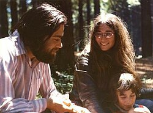

Manuel Blum | |
|---|---|
 | |
| Born | 26 April 1938 Caracas, Venezuela |
| Education | Massachusetts Institute of Technology (BS, MS, PhD) |
| Known for | Blum complexity axioms Blum integer Blum's speedup theorem Blum Blum Shub Blum–Goldwasser cryptosystem Blum–Micali algorithm CAPTCHA reCAPTCHA Commitment scheme |
| Spouse | Lenore Blum |
| Awards | ACM's A.M. Turing Award, 1995 Distinguished Teaching Award, UC Berkeley, 1977 Sigma Xi's Monie A. Ferst Award, 1991 Herbert A.Simon Teaching award, 2007 |
| Scientific career | |
| Fields | Computer science |
| Institutions | University of California, Berkeley Carnegie Mellon University |
| Thesis | A Machine-Independent Theory of the Complexity of Recursive Functions (1964) |
| Marvin Minsky[1] | |
Doctoral students | Leonard Adleman Dana Angluin C. Eric Bach Shafi Goldwasser Mor Harchol-Balter Russell Impagliazzo Silvio Micali Gary Miller Moni Naor Ronitt Rubinfeld Steven Rudich Jeffrey Shallit Michael Sipser Umesh Vazirani Vijay Vazirani Luis von Ahn Ryan Williams[1] |
| Website | www |
Manuel Blum (born 26 April 1938) is a Venezuelan-born American computer scientist who received the 1995 ACM Turing Award[2] "In recognition of his contributions to the foundations of computational complexity theory and its application to cryptography and program checking".[3][4][5][6][7][8]
Blum was born to a Jewish family in Venezuela.[9] Blum was educated at MIT, where he received his bachelor's degree and his master's degree in electrical engineering in 1959 and 1961 respectively. In MIT, he was recommended to Warren S. McCulloch, and they collaborated on some mathematical problems in neural networks.[10][11][12] He obtained a Ph.D. in mathematics in 1964 supervised by Marvin Minsky.[1][7]
Blum worked as a professor of computer science at the University of California, Berkeley until 2001. From 2001 to 2018, he was the Bruce Nelson Professor of Computer Science at Carnegie Mellon University, where his wife, Lenore Blum,[13] was also a professor of computer science.
In 2002, Blum was elected to the United States National Academy of Sciences. In 2006, he was elected a member of the National Academy of Engineering for contributions to abstract complexity theory, inductive inference, cryptographic protocols, and the theory and applications of program checkers.
In 2018, Blum and his wife Lenore resigned from Carnegie Mellon University to protest against sexism after a change in management structure of Project Olympus led to sexist treatment of her as director and the exclusion of other women from project activities.[14]
In the 1960s he developed an axiomatic complexity theory which was independent of concrete machine models. The theory is based on Gödel numberings and the Blum axioms. Even though the theory is not based on any machine model it yields concrete results like the compression theorem, the gap theorem, the honesty theorem and the Blum speedup theorem.
Some of his other work includes a protocol for flipping a coin over a telephone, median of medians (a linear time selection algorithm), the Blum Blum Shub pseudorandom number generator, the Blum–Goldwasser cryptosystem, and more recently CAPTCHAs.[15]
Blum is also known as the advisor of many prominent researchers. Among his Ph.D. students are Leonard Adleman, Dana Angluin, Shafi Goldwasser, Mor Harchol-Balter, Russell Impagliazzo, Silvio Micali, Gary Miller, Moni Naor, Steven Rudich, Michael Sipser, Ronitt Rubinfeld, Umesh Vazirani, Vijay Vazirani, Luis von Ahn, and Ryan Williams.[1]
{kind=link}